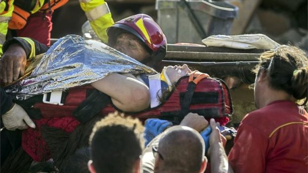
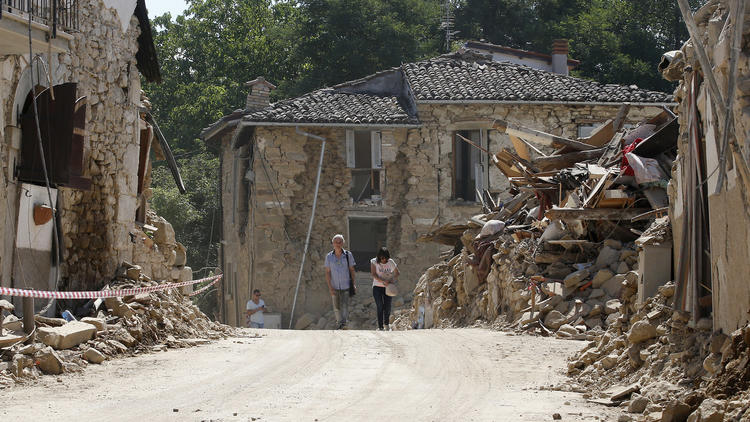
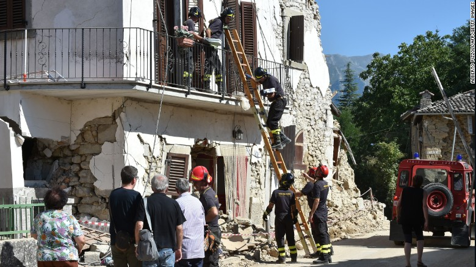
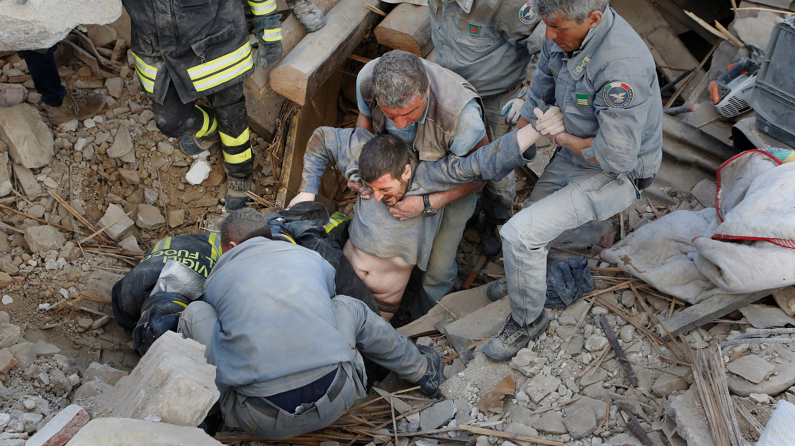

At least 159 people have been killed and 368 injured in an earthquake that hit a mountainous area of central Italy, civil protection officials say.
The magnitude-6.2 quake struck at 03:36 (01:36 GMT), 100km (65 miles) north-east of Rome, not far from Perugia.
At least 86 of the dead were in the historic town of Amatrice, where the mayor said three-quarters of the town was destroyed, and in nearby Accumoli.
Many people are still believed to be buried under rubble.
Rescue teams are using heavy lifting equipment and their bare hands and authorities said the search for survivors would continue through the night.
News, BBC. "Italy Earthquake: Death Toll Rises to at Least 159." BBC News. BBC News, 24 Aug. 2016. Web. 02 Oct. 2016.
The quake that struck before dawn Wednesday also injured nearly 400 people as it flattened three medieval towns near the rugged Apennines. Prosecutor Giuseppe Saieva, based in the nearby provincial capital of Rieti, said the high human death toll "cannot only be considered the work of fate."
"The fault lines tragically did their work and this is called destiny, but if the buildings had been built like in Japan they would not have collapsed," Saieva said in comments carried by Italian media.
Investigations are focusing on a number of structures, including an elementary school in Amatrice that crumbled despite being renovated in 2012 to resist earthquakes at a cost of 700,000 euros ($785,000). With schoolchildren's summer vacations in their final weeks, the school wasn't yet in use. Many were shocked that it didn't withstand the 6.2 magnitude quake.
After an entire first-grade class and a teacher were killed in a 2002 quake in the southern town of San Giuliano di Puglia, Italian officials had pledged citizens that the safety of schools, hospitals and other critical public buildings would be guaranteed.
Services, Tribune News. "Italy to See If Building Negligence Raised Earthquake Death Toll." Chicagotribune.com. The ChicagoTribune, 28 Aug. 2016. Web. 01 Oct. 2016.
The powerful earthquake hit 10 kilometers (6.2 miles) southeast of Norcia at 3:36 a.m. (9:36 p.m. Tuesday ET).
Italy's Civil Protection agency said of the people killed in the quake, at least 53 of them were in the town of Amatrice, and at least 100 people were injured. Other fatalities were reported in the nearby towns of Accumoli and Arquata del Tronto.
More than 1,000 people have been displaced by the quake, and the Civil Protection agency said no residents will be allowed to sleep in the devastated town of Amatrice Wednesday night.
"At Least 247 Killed in Earthquake in Central Italy." CNN. Cable News Network, 25 Aug. 20016. Web. 01 Oct. 2016.
On Thursday, the Italian Civil Protection Department said 241 people were confirmed dead, and hundreds more injured.
Prime Minister Matteo Renzi, speaking Wednesday from Rieti, a city in Lazio near the epicenter, likened the affected communities to “a family that has been hit but won’t stop.” He vowed that the government would quickly start to rebuild, noting widespread anger over the long delays in rebuilding after the 2009 quake. “Reconstruction is what will allow this community to live and to restart,” he said.
Immacolata Postiglione, the head of the emergency unit for the Civil Protection Department, said on Wednesday that more than 1,000 people were expected to spend the night in four camps being set up in the area. She added that an unknown number of tourists had not been fully accounted for. “The number of missing people is undefined at the moment,” she said.
Povoledo, Elisabetta. "Powerful Earthquake in Italy Kills at Least 241 and Shatters Towns." The New York Times. The New York Times, 24 Aug. 2016. Web. 01 Oct. 2016.